3 Schema Workbench
Mondrian es un motor OLAP escrito en Java: ejecuta consultas MDX sobre datos en una BD relacional y devuelve los resultados en formato multidimensional (Hyde (2009), Back, Goodman, and Hyde (2014)). Ofrece una visión multidimensional sobre los datos en la BD relacional mediante un esquema multidimensional definido en XML. Es el motor OLAP de Pentaho BI Suite, conjunto de herramientas libres de Inteligencia de Negocio.
Como BD relacional usaremos PostgreSQL. Para definir el esquema multidimensional podemos utilizar directamente un editor de XML o utilizar Schema Workbench que permite definir los elementos del esquema basándonos en la BD relacional que contiene los datos.
Objetivos del capítulo
Entender el desarrollo de esquemas multidimensionales.
Definir los elementos de un esquema multidimensional para un caso sencillo.
Entender la estructura y la implementación de los cubos OLAP.
3.1 Punto de partida
El punto de partida es la BD OLAP en PostgreSQL resultado de la actividad con Pentaho Data Integration, la que habíamos nombrado con el nombre de la provincia asignada y el sufijo “_olap” (p.e., en mi caso, granada_olap). Esta BD contiene tres tablas, dos dimensiones (Cuándo, Dónde) y los hechos (Padrón), con el sufijo del nombre de la provincia asignada (p.e., en mi caso cuando_granada, donde_granada y padron_granada).
3.2 Definición del esquema multidimensional
Un esquema multidimensional para Mondrian es un archivo XML. Para definirlo vamos a usar Schema Workbench. Con esta herramienta podemos definir todos los elementos del esquema que necesitamos. Se puede dar la situación en la que tengamos jerarquías muy parecidas dentro de una dimensión o incluso dimensiones similares. El archivo XML del esquema es bastante sencillo e intuitivo. Para agilizar su definición, podemos editar el archivo con uno de los editores XML disponibles. Para ello, deberemos salvar y cerrar el esquema en Schema Workbench, editarlo con el editor que elijamos, guardarlo y cerrarlo, y volverlo a abrir con Schema Workbench para comprobar que las modificaciones que hayamos hecho son correctas.
Para crear un nuevo esquema en Schema Workbench, pulsamos sobre New > Schema (figura 3.1).
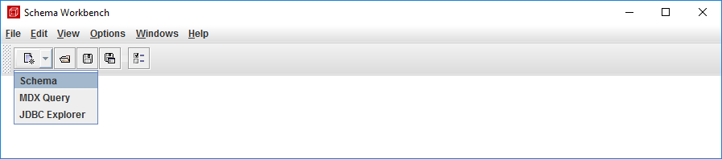
Figura 3.1: Crear un nuevo esquema en Schema Workbench.
Un esquema está asociado a una BD relacional. Para definir un esquema, lo ideal es estar conectados a la BD que contiene las tablas de hechos y dimensiones, y basarnos en ellas para realizar la definición. Schema Workbench valida las definiciones realizadas respecto al contenido de la BD. Por este motivo, al crear el esquema, nos avisa de que no se puede conectar a la BD (figura 3.2).
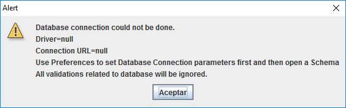
Figura 3.2: Aviso de que falta la conexión con la BD.
3.2.1 Conexión con la BD
Para conectar Schema Workbench con PostgreSQL necesitamos incluir un driver en la subcarpeta drivers, de la carpeta donde esté instalada Schema Workbench. Lo podemos tomar de la subcarpeta lib, de la carpeta donde esté instalada PDI (Pentaho Data Integration). En particular el archivo postgresql-XX.X.X.jar.
Por tanto, debemos realizar las operaciones siguientes:
Copiar el archivo
postgresql-XX.X.X.jardesde la subcarpetadata-integration/libhasta la subcarpetaschema-workbench/drivers.Reiniciar Schema Workbench para que lo considere.
Para definir la conexión con la BD, pulsamos sobre Options > Connection (figura 3.3).
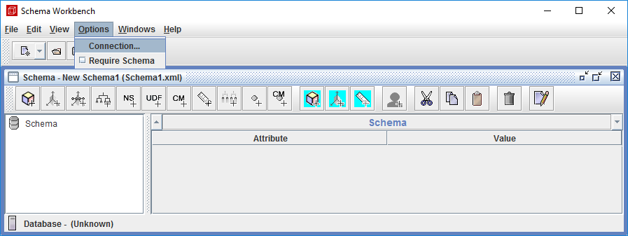
Figura 3.3: Definir la conexión con la BD.
En la ventana de definición de propiedades (figura 3.4), en el apartado Connection type, seleccionamos la opción PostgreSQL y automáticamente se configura la zona Settings con los campos a completar (en Port Number, el valor que indica es el correcto).
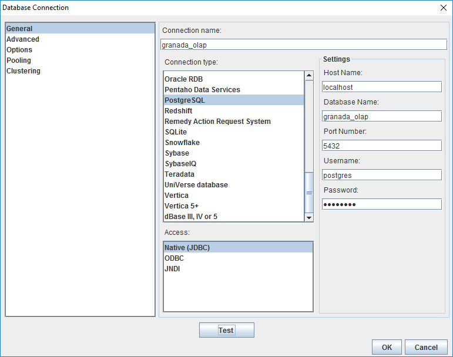
Figura 3.4: Definición de la conexión con la BD.
Los rellenamos con los valores siguientes:
Host Name:
localhost(en el entorno de prácticas, está en la misma máquina en la que trabajamos).Database Name: el nombre de nuestra BD OLAP (p.e., en mi caso
granada_olap).Username:
postgres(el usuario con el que accedemos a la BD, el valor que se indica es el que usamos en el entorno de prácticas).Password:
postgres(la contraseña del usuario que usemos, en este caso el del entorno de prácticas).
También tenemos que asignarle un nombre a la conexión, en el campo Connection name:
- El criterio que vamos a seguir es asignarle el mismo nombre de la BD (p.e., en mi caso
granada_olap).
A continuación, pulsamos sobre Test para comprobar que se establece la conexión correctamente. Si todo va bien, pulsamos sobre OK.
3.2.2 Definición del esquema y el cubo
Para cada elemento que definamos, la pantalla de definición está estructurada en dos columnas: en una se indica el nombre de el atributo a definir, en la otra el valor (figura 3.5).
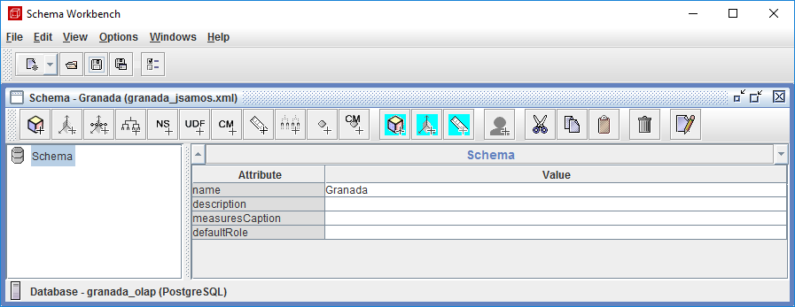
Figura 3.5: Nombre del esquema.
Para el esquema, vamos a definir el atributo name con el valor correspondiente al nombre de nuestra provincia asignada (p.e., en mi caso Granada).
Vamos al guardar el archivo XML del esquema (pulsando sobre el botón Save en la barra de herramientas):
- Le asignaremos el nombre de la provincia y, a continuación, el nombre de nuestro usuario (p.e., en mi caso se llamará
granada_jsamos.xml) y lo guardaremos en nuestra carpeta de trabajo1.
En la línea de estado de la ventana (figura 3.5), se puede apreciar información sobre la conexión establecida con la BD.
Una vez hemos creado un esquema, podemos ir añadiéndole elementos. En primer lugar, un elemento cube. Se puede añadir tanto desde la barra de herramientas (pulsando sobre el icono Add cube) o desde el menú contextual del esquema2 (figura 3.6).
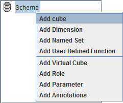
Figura 3.6: Añadir elemento cube a un esquema.
La figura 3.7 muestra la definición del elemento cube del esquema. Al atributo name le damos el valor Padrón, en description añadimos el nombre de nuestra provincia (p.e., en mi caso Granada). El resto de atributos los dejamos vacíos o con el valor por defecto que incluyen.
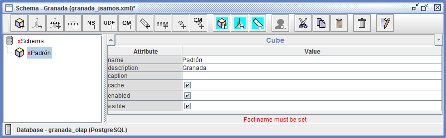
Figura 3.7: Definición de cube en un esquema.
Conforme vamos realizando la definición de los elementos, los valida con la BD. Si detecta algún problema, nos avisa (se puede ver el mensaje al pie de la zona Cube, donde definimos el valor de los atributos). Los mensajes de aviso se refieren al elemento en el que estamos situados, no necesariamente a la definición que estamos realizando en ese momento. Por ejemplo, el mensaje de la figura 3.7 se refiere a un elemento Fact name, que no aparece en la ventana de definición actual.
El mensaje anterior lo que nos indica es que el cubo todavía no está asociado a la tabla de hechos en la BD. Para definir la tabla de hechos, en el menú contextual, pulsamos sobre la opción Add Table (figura 3.8).
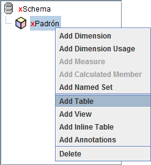
Figura 3.8: Añadir tabla al elemento cube a un esquema.
Para definir la tabla, tenemos que definir los atributos schema, donde seleccionamos el valor public3, y name, donde seleccionamos el nombre de la tabla de hechos(p.e., en mi caso padron_granada), como se muestra en la figura 3.9
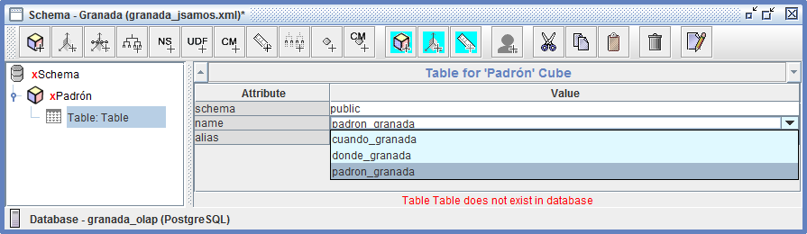
Figura 3.9: Definición de la tabla de cube en un esquema.
Una vez asociada la tabla de hechos con el cubo, nos avisa de que un cubo debe contener dimensiones (figura 3.10) que es lo que vamos a definir a continuación.
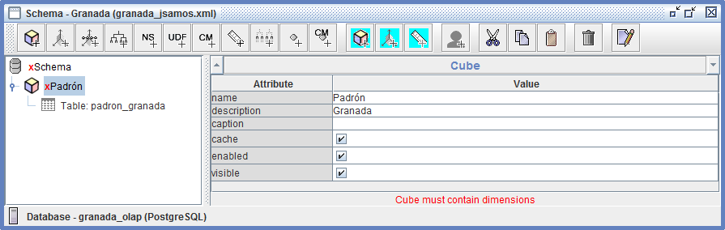
Figura 3.10: Elemento cube en un esquema con su tabla asociada.
3.2.3 Definición de dimensiones
Para definir una dimensión asociada a un cubo, pulsamos sobre Add Dimension en el menú contextual del cubo (figura 3.11).
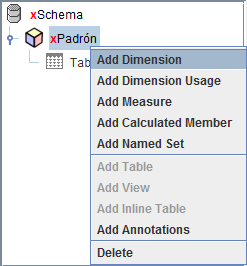
Figura 3.11: Añadir dimensión al esquema.
Los atributos de la dimensión que debemos definir son (figura 3.12):
name,
foreignKey: la llave externa de la dimensión en la tabla de hechos,
type: se distinguen dos tipos de dimensiones StandadDimension y TimeDimension.
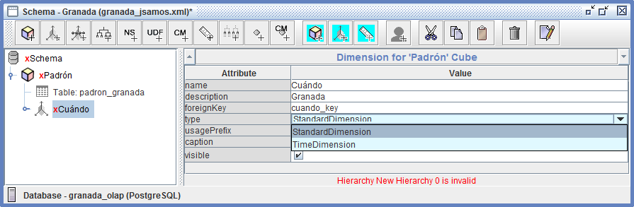
Figura 3.12: Definición de dimension en un esquema.
Aunque se trate de la dimensión tiempo, vamos a definir todas las dimensiones como StandadDimension. Al definir una dimensión como TimeDimension lo que facilitamos es el uso de funciones específicas de MDX que se basan en la estructura típica de esta dimensión (día - semana - mes - cuatrimestre - año).
Cada dimensión puede incluir varias jerarquías con niveles que pueden tener definidas propiedades. Se definen mediante la operación Add Hierarchy desde el menú contextual de la dimensión correspondiente (figura 3.13).
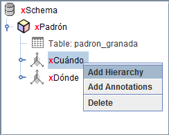
Figura 3.13: Añadir Jerarquía a una dimensión.
En lugar de definir una tabla asociada a la dimensión, cada jerarquía tiene asociada una tabla de la BD. También se define desde el menú contextual de la jerarquía, seleccionando la operación Add Table. Así, para poder definir más fácilmente los atributos de una jerarquía (con la ayuda de validación respecto a la BD de la herramienta), es conveniente que lo primero que hagamos sea asociarle la tabla en la que se basa. A partir de ahí basta con definir su nombre (name) y la llave primaria de la tabla (primaryKey). También se puede definir si a la jerarquía se le añade un nivel Todo (hasAll), pudiendo indicar el nombre del nivel (allLevelName) y el valor de su única instancia (allMemberName), como se ha hecho en la figura 3.14.
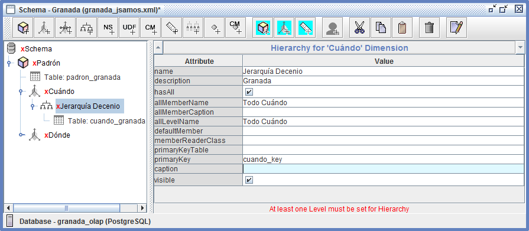
Figura 3.14: Definición de hierarchy en una dimensión.
Podemos definir y añadir niveles a una jerarquía desde su menú contextual correspondiente, seleccionando la operación Add Level.
Para definir un nivel (figura 3.15), definimos los atributos name, column (la columna de la tabla de la jerarquía en la que se basa el nivel) y type.
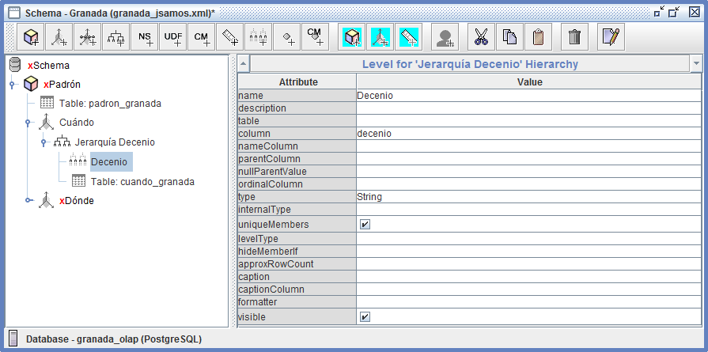
Figura 3.15: Definición de level en una jerarquía.
Hay un atributo booleano al que prestar atención, uniqueMembers. Se usa para optimizar la generación de código SQL: indica si un valor de un nivel inferior determina al valor correspondiente del nivel superior (dicho de otra forma, cada valor distinto de un nivel inferior solo está relacionado con un valor de un nivel superior). En nuestro caso, deberemos prestar atención a este atributo en la jerarquía en la que incluyamos a Nivel habitantes y Municipio.
Podemos definir propiedades asociadas a un determinado nivel, desde el menú contextual del nivel, pulsando sobre la operación Add Property. En nuestro caso, como no tratamos la comunidad autónoma como nivel (por tener datos de una sola provincia), podemos definirla como una propiedad de la Provincia. También podemos definir el código de municipio como una propiedad de municipio en cada jerarquía en la que aparece (figura 3.16).
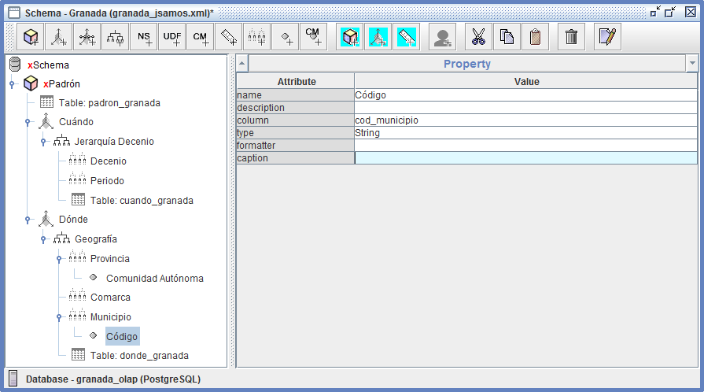
Figura 3.16: Definición de propery en un nivel.
3.2.4 Definición de medidas
Para definir una medida asociada a un cubo, pulsamos sobre Add Measure en el menú contextual del cubo (figura 3.17).
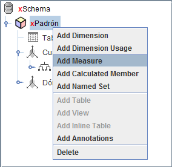
Figura 3.17: Añadir medida al esquema.
Los atributos de la medida que debemos definir son (figura 3.18):
name,
aggregator: la función de agregación (aunque sean medidas semi-aditivas, usaremos la suma en todos los casos del ejemplo),
column: columna de la tabla de hechos en la que se basa,
datatype: tipo (deberá ser numérico).
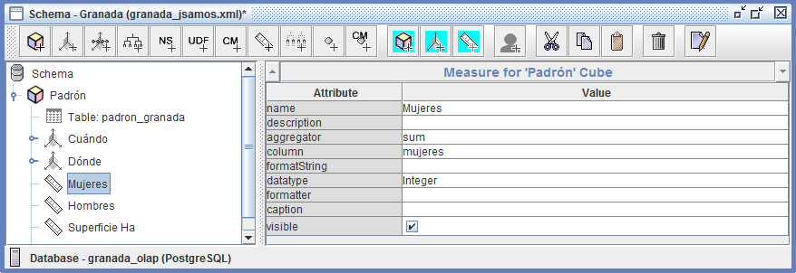
Figura 3.18: Definición de measure en un esquema.
Las medidas calculadas se definen también desde el menú contextual del cubo, seleccionando la opción Add Calculated Member (figura 3.17).
Se pueden añadir elementos calculados tanto a las dimensiones como a los hechos. De hecho, los miembros calculados se añaden a las dimensiones y el conjunto de mediciones se considera como una dimensión más. Nos vamos a limitar a definir medidas calculadas.
Para definir una medida calculada, definimos su nombre (name) y, en el campo dimension hemos de dejar indicado el valor Measures que es el que aparece por defecto (figura 3.19).
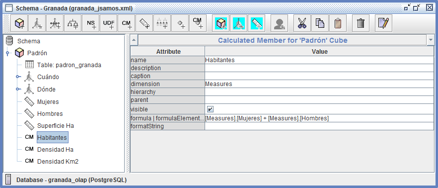
Figura 3.19: Definición de calculated member en un esquema.
Por último, en el atributo formula | formulaElement, hemos de indicar su expresión en función de medidas almacenadas u otras medidas calculas, indicando la dimensión en la que se encuentran ([Measures])4. Por ejemplo, para la medida Habitantes, la expresión que la define es:
[Measures].[Mujeres] + [Measures].[Hombres]
Así, para utilizar la nueva medida definida en otras expresiones, deberemos usar la forma:
[Measures].[Habitantes].
Ejercicios
Ejercicio: Definición de esquemas para Mondrian
Todos los apartados siguientes valen igual.
Esquema para el censo:
- Define el esquema para el diseño del censo.
Esquema para ventas:
- Define el esquema para uno de los diseños de ventas en una cadena de tiendas (de la práctica Consultas Multidimensionales).
Documentación a entregar:
Genera un documento en formato PDF con la estructura siguiente y el contenido que se indica a continuación:
- Un apartado para cada ejercicio
- Schema Workbench: Captura de pantalla completa de Schema Workbench mostrando el esquema (aunque se haya definido directamente el archivo XML).
- XML: definición del esquema en formato XML.
- Un apartado para cada ejercicio
References
Desde la carpeta de trabajo lo copiaremos a las carpetas donde lo vayamos a utilizar.↩︎
En adelante, solo se va a indicar la operación usando el menú contextual.↩︎
Estamos trabajando con el esquema public de la BD, el que usa por defecto si no se indica uno específico.↩︎
La expresión de definición está definida en MDX.↩︎